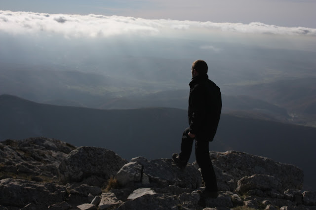

Desde las cumbres del corazón
Fue alrededor de la medianoche cuando Zaratustra emprendió su camino sobre la cresta de la isla para llegar de madrugada a la otra orilla: pues en aquel lugar quería embarcarse. Había allí, en efecto, una buena rada, en la cual gustaban echar el ancla incluso barcos extranjeros; éstos recogían a algunos que querían dejar las islas afortunadas y atravesar el mar. Mientras Zaratustra iba subiendo la montaña pensaba en las muchas caminatas solitarias que había realizado desde su juventud y en las muchas montañas y crestas y cimas a que ha había ascendido.
Yo soy un caminante y un escalador de montañas, decía a su corazón, no me gustan las llanuras, y parece que no puedo estarme sentado tranquilo largo tiempo.
Y sea cual sea mi destino, sean cuales sean las vivencias que aún haya yo de experimentar, - siempre habrá en ello un caminar y un escalar montañas: en última instancia uno no tiene vivencias más que de sí mismo.
Pasó ya el tiempo en que era lícito que a mí me sobrevinieran acontecimientos casuales; ¡y qué podría ocurrirme todavía que no fuera ya algo mío!
Lo único que hace es retornar, por fin vuelve a casa - mi propio sí-mismo y cuanto de él estuvo largo tiempo en tierra extraña y disperso entre todas las cosas y acontecimientos casuales.
Y una cosa más sé: me encuentro ahora ante mi última cumbre y ante aquello que durante más largo tiempo me ha sido ahorrado. ¡Ay, mi más duro camino es el que tengo que subir! ¡Ay, he comenzado mi caminata más solitaria!
Pero quien es de mi especie no se libra de semejante hora: de la hora que le dice: «¡Sólo en este instante recorres tu camino de grandeza! ¡Cumbre y abismo - ahora eso está fundido en una sola cosa!
Recorres tu camino de grandeza: ¡ahora se ha convertido en tu último refugio lo que hasta el momento se llamó tu último peligro!
Recorres tu camino de grandeza: ¡ahora es necesario que tu mejor valor consista en que no quede ya ningún camino a tus espaldas!
Recorres el camino de tu grandeza: ¡nadie debe seguirte aquí a escondidas! Tu mismo pie ha borrado detrás de ti el camino, y sobre él está escrito: Imposibilidad.
Y si en adelante te faltan todas las escaleras, tienes que saber subir incluso por encima de tu propia cabeza: ¿cómo querrías, de otro modo, caminar hacia arriba?
¡Por encima de tu propia cabeza y más allá de tu propio corazón! Ahora lo más suave de ti tiene aún que convertirse en lo más duro.
Quien siempre se ha tratado a sí mismo con mucha indulgencia acaba por enfermar a causa de ello. ¡Alabado sea lo que endurece! ¡Yo no alabo el país donde corren – manteca y miel.
Es necesario aprender a apartar la mirada de sí para ver muchas cosas: - esa dureza necesítala todo aquel que escala montañas.
Mas quien tiene ojos importunos como hombre del conocimiento, ¡cómo iba a ver ése en todas las cosas algo más que los motivos superficiales de ellas!
Tú, sin embargo, oh Zaratustra, has querido ver el fondo y el trasfondo de todas las cosas: por ello tienes que subir por encima de ti mismo, - ¡arriba, cada vez más alto, hasta que incluso tus estrellas las veas por debajo de ti!
¡Sí! Bajar la vista hacia mí mismo e incluso hacia mis estrellas: ¡sólo esto significaría mi cumbre, esto es lo que me ha quedado aún como mi última cumbre! -
Así iba diciéndose Zaratustra a sí mismo al ascender, consolando su corazón con duras sentenzuelas: pues tenía el corazón herido como nunca antes. Y cuando llegó a la cima de la cresta de la montaña, he aquí que el otro mar yacía allí extendido ante su vista: entonces se detuvo y calló largo rato. La noche era fría en aquella cumbre, y clara y estrellada.
Conozco mi suerte, se dijo por fin con pesadumbre. ¡Bien! Estoy dispuesto. Acaba de empezar mi última soledad.
¡Ay, ese mar triste y negro a mis pies! ¡Ay, esa grávida desazón nocturna! ¡Ay, destino y mar! ¡Hacia vosotros tengo ahora que descender!
Me encuentro ante mi montaña más alta y ante mi más larga caminata: por eso tengo primero que descender más bajo de lo que nunca descendí:
- ¡Descender al dolor más de lo que nunca descendí, hasta su más negro oleaje! Así lo quiere mi destino: ¡Bien! Estoy dispuesto.
¿De dónde vienen las montañas más altas?, pregunté en otro tiempo. Entonces aprendí que vienen del mar.
Este testimonio está escrito en sus rocas y en las paredes de sus cumbres. Lo más alto tiene que llegar a su altura desde lo más profundo. - Así dijo Zaratustra en la cima del monte, donde hacía frío; mas cuando se acercó al mar y se encontró por fin únicamente entre los escollos, el camino lo había cansado y vuelto aún más anheloso que antes.
Todo continúa aún dormido, dijo; también el mar duerme. Ebrios de sueño y extraños miran sus ojos hacia mí.
Pero su aliento es cálido, lo siento. Y siento también que sueña. Y soñando se retuerce sobre duras almohadas.
¡Escucha! ¡Escucha! ¡Cómo gime el mar a causa de recuerdos malvados! ¿O tal vez a causa de expectativas malvadas?
Ay, triste estoy contigo, oscuro monstruo, y enojado conmigo mismo por tu causa.
¡Ay, por qué no tendrá mi mano bastante fortaleza! ¡En verdad, me gustaría redimirte de sueños malvados! –
Y mientras Zaratustra hablaba así, se reía de sí mismo con melancolía y amargura.
«¡Cómo! ¡Zaratustra!, dijo, ¿quieres consolar todavía al mar cantando?
¡Ay, Zaratustra, necio rico en amor, sobrebienaventurado de confianza! Pero así has sido siempre: siempre te has acercado confiado a todo lo horrible.
Has querido incluso acariciar a todos los monstruos. Un vaho de cálida respiración, un poco de suave vello en las garras -: y enseguida estabas dispuesto a amar y a atraer.
El amor es el peligro del más solitario, el amor a todas las cosas, ¡con tal de que vivan!
¡De risa son, en verdad, mi necedad y mi modestia en el amor!» -
Así habló Zaratustra, y rió por segunda vez: entonces pensó en sus amigos abandonados -, y como si los hubiera ofendido con sus pensamientos, enojóse consigo mismo a causa de éstos. Y pronto ocurrió que el que reía se puso a llorar: - de cólera y de anhelo lloró Zaratustra amargamente.
Friedrich Nietzsche
Así habló Zaratustra.
